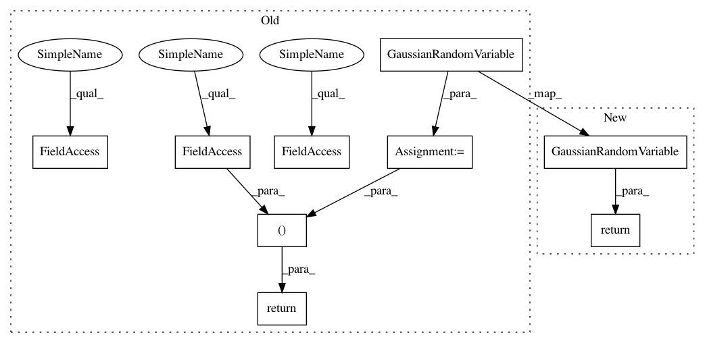

b61a525baee25d2ea31ab088540dd4d2ffed2251,test/examples/multitask_gp_regression_test.py,MultitaskGPModel,forward,#MultitaskGPModel#Any#Any#,38
Before Change
self.register_parameter("task_log_vars", nn.Parameter(torch.randn(2)), bounds=(-6, 6))
def forward(self, x, i):
mean_x = self.mean_module(x, constant=self.constant_mean)
covar_x = self.covar_module(x, log_lengthscale=self.log_lengthscale)
covar_i = self.task_covar_module(i,
index_covar_factor=self.task_matrix,
index_log_var=self.task_log_vars)
covar_xi = covar_x.mul(covar_i)
latent_pred = GaussianRandomVariable(mean_x, covar_xi)
return latent_pred, self.log_noise
def test_multitask_gp_mean_abs_error():
prior_gp_model = MultitaskGPModel()
After Change
covar_x = self.covar_module(x)
covar_i = self.task_covar_module(i)
covar_xi = covar_x.mul(covar_i)
return GaussianRandomVariable(mean_x, covar_xi)
def test_multitask_gp_mean_abs_error():
prior_gp_model = MultitaskGPModel()
In pattern: SUPERPATTERN
Frequency: 3
Non-data size: 9
Instances
Project Name: cornellius-gp/gpytorch
Commit Name: b61a525baee25d2ea31ab088540dd4d2ffed2251
Time: 2017-08-15
Author: gpleiss@gmail.com
File Name: test/examples/multitask_gp_regression_test.py
Class Name: MultitaskGPModel
Method Name: forward
Project Name: cornellius-gp/gpytorch
Commit Name: b61a525baee25d2ea31ab088540dd4d2ffed2251
Time: 2017-08-15
Author: gpleiss@gmail.com
File Name: test/examples/spectral_mixture_gp_regression_test.py
Class Name: SpectralMixtureGPModel
Method Name: forward
Project Name: cornellius-gp/gpytorch
Commit Name: b61a525baee25d2ea31ab088540dd4d2ffed2251
Time: 2017-08-15
Author: gpleiss@gmail.com
File Name: test/examples/simple_gp_regression_test.py
Class Name: ExactGPModel
Method Name: forward
Project Name: cornellius-gp/gpytorch
Commit Name: b61a525baee25d2ea31ab088540dd4d2ffed2251
Time: 2017-08-15
Author: gpleiss@gmail.com
File Name: test/examples/multitask_gp_regression_test.py
Class Name: MultitaskGPModel
Method Name: forward